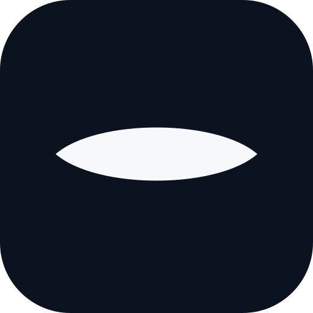

不画动物之后：两条能收住的方向
同一把尺子 · 512 / 64 / 32 / 16px 真像素 · 字标用界面同一套字（PingFang SC）
托盘 16–22px 侧栏 32px 图标 256–512px
下图所有图标均为矢量渲染，非位图缩放
方向一 ·「一条缝」
一个形，两色，没有第二笔。读作：一道门缝里的光 / 一只半阖的眼 / 一条地平线。
推荐：最克制，也最像"做减法"

Meerkat
替你盯着
64
32
16
16 放大
方向二 ·「m」
名字的首字母，自己画的几何 m。不解释就有名字，但也就只有名字。
最省事，记忆点靠字
Meerkat
替你盯着
64
32
16
16 放大
参照 · 上一轮的狐獴头
信息量最大，也最"有东西"。和上面两条比，它更像贴纸，不像标志。
不是更差，是另一种用途
Meerkat
替你盯着
64
32
16
16 放大
托盘（菜单栏，2× 放大看像素）
左：缝的镂空版 右：m。缝在小尺寸做了光学补偿——缝高从画布的 22.7% 提到 25%，否则 16px 会退化成一条实心胶囊。
Meerkat
替你盯着
今日
搜索
时间线
源
设置
侧栏里的样子（真实 26px）。
缝在这个尺寸仍然是一条干净的横线；狐獴头在这里是一张小照片， 信息量大，但在一个已经有 24 条标题的界面里，它抢注意力。
"克制"在这里的具体含义：图标不再承担讲故事的任务。故事交给字标和界面，图标只负责"是它"。
16px 的真相：
两条都能活——缝缩成一道横线，m 缩成一个小写字母的剪影。 上一轮的狐獴头在这一档已经糊了。这是"简洁"换来的唯一硬收益。